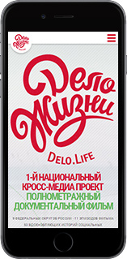
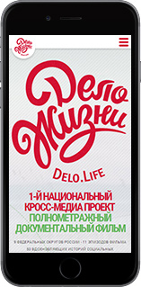
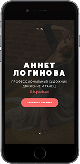
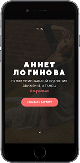

 
I'm a part-time freelance frontend web developer who is passionate about creating fast, modern and responsive websites.
My main skills:
- HTML5
- CSS3
- JS
- jQuery
- Stylus
- BEM
I also use npm, gulp and bower to speed up development process.
hire me on upwork


I'm a part-time freelance frontend web developer who is passionate about creating fast, modern and responsive websites.
My main skills:
I also use npm, gulp and bower to speed up development process.
hire me on upwork